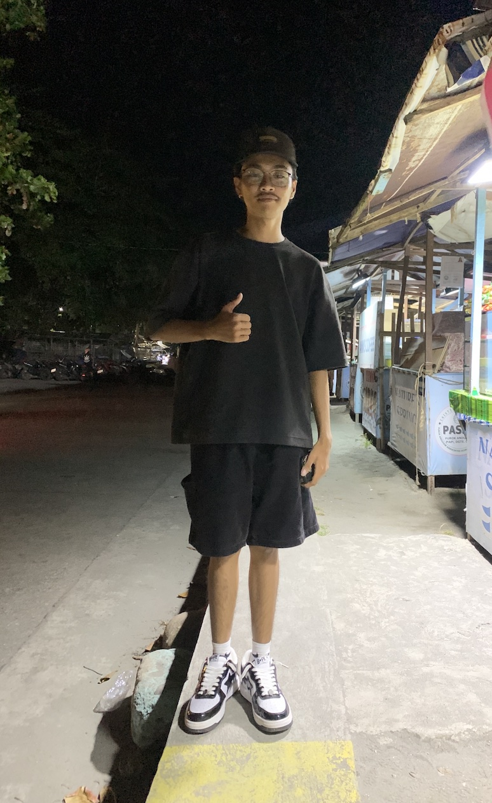

Billiards
Vhens
Alongside, I have a deep appreciation for billiards, a game that challenges both strategy and focus. Whether it's perfecting a shot or tuning an engine, I find fulfillment in activities that combine precision, problem-solving, and creativity.
Mastering the Cue
Vhens demonstrates perfect form while taking a shot at the battle field.
The Battleground
This is where we fight our Battles.
Strategic Planning
Analyzing the table layout, Vhens plans his next move in the game.
Jesvi

In addition to mechanics, I have a deep love for billiards. The game captivates me with its strategic depth and the focus required to perfect each shot. These hobbies reflect my enthusiasm for mastering intricate tasks and my dedication to continual improvement.
In the Zone
Jesvi displays deep focus during an intense game of billiards with a pot money of $5(JK).
Perfect Table to Battle
Brand new set in the crib.
Table Assessment
Jesvi surveys the billiards table, taking a serious shot.